Follow-Along: Retro Platformer
Learn about MakeCode Arcade and add some code to start building a platformer game!
MakeCode Arcade Introduction
Play through the jumpy platformer for an idea of what is possible with MakeCode Arcade. This editor uses block-based code (or JavaScript) to create retro games. The games can even be ported to physical devices. It may take a long time to build something like the jumpy platformer, but getting started with a simple platformer is not as difficult!
Go to arcade.makecode.com/#editor to start working on a new MakeCode Arcade project. The editor looks like this:
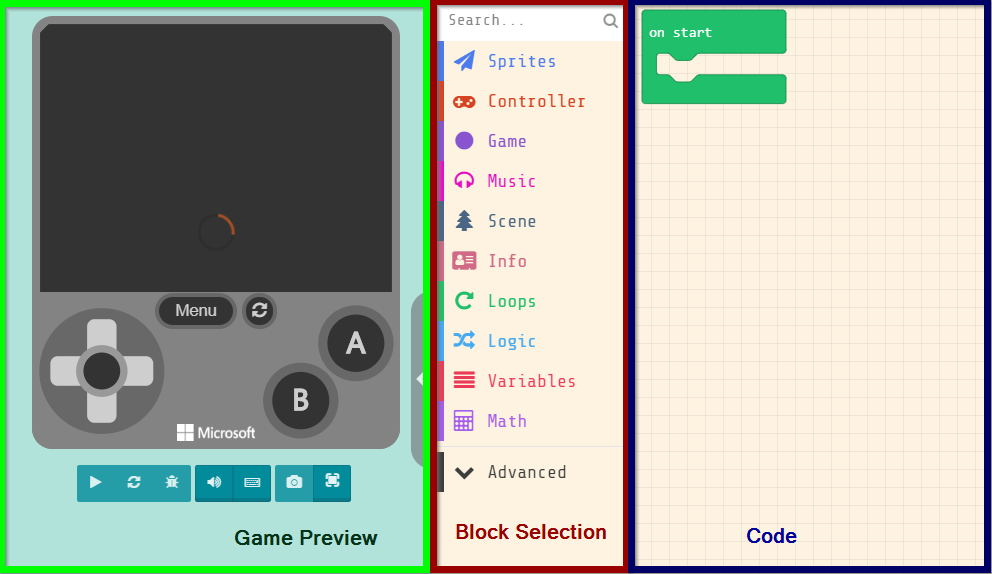
Page Sections
- Game Preview: This pane on the left is where the developer can test out the game.
- Block Selection: This pane in the middle is where the blocks live. They can be dragged to the Code section to create the program.
- Code: This pane on the right is where the code for the program lives. Drag blocks from the Block Selection section into this section to create code.
Setting a Background Color
For the first block of the game, set the background color.
- In the Block Selection section, click on "Scene" and find the
set background color toblock
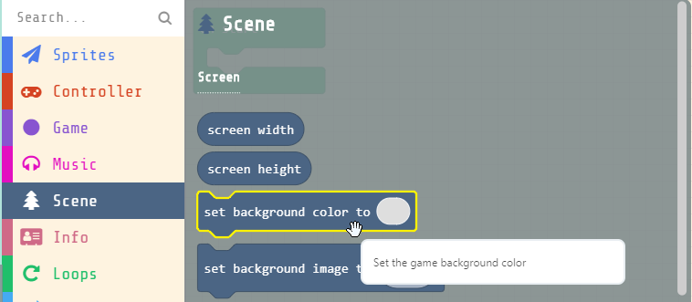
- Click on the
set background color toblock, and drag it into theon startblock
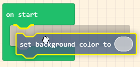
- Click on the blank spot in the background color block, and select a color for the background
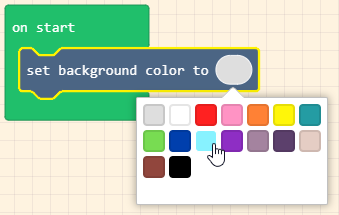
- The game preview should automatically update, and the background should be the proper color!
Creating the Main Character
The first thing the game needs is a main character for the player to control!
- In the Block Selection section, in the "Sprites" category, click and drag the red
set mySprite toblock under the background color block
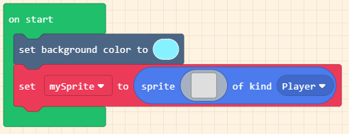
- In the
set mySprite toblock, click the drop-down arrow onmySprite, and click "Rename variable..."
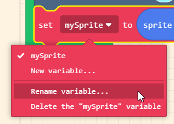
- Set the variable name to "Main Character"
- Note: If the main character has a name, this could be their name instead! Just make sure to use the name when referencing the
Main Charactersprite
- Note: If the main character has a name, this could be their name instead! Just make sure to use the name when referencing the
- Click on the blank space next to "sprite" in the
set spriteblock to open the Sprite Editor
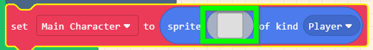
- Draw a sprite image for the main character, and then click the green "Done" button in the bottom right
- The game preview should automatically update, and the main character sprite should appear!
Side-Note: Variables
In computer science, variables are containers for data. In MakeCode Arcade, variables can hold things like sprites, images, hit points, the player's score... almost anything!
Moving the Main Character
The main character should be able to move left and right, as in any other platformer.
- From the "Controller" category, click and drag a red
move mySprite with buttons +block under theset spriteblock
- In the
moveblock, click the drop-down arrow onmySprite, and selectMain Character - In the game preview, notice that it is possible to move left and right, but also up and down
- To prevent the main character from moving up and down, click the
+in themoveblock, and set thevyto0- This sets the vertical speed of the main character sprite to
0
- This sets the vertical speed of the main character sprite to
- Test out the game in the game preview again, and verify that the main character only moves left and right!
Side-Note: The Cartesian Plane - Up, Down, Left, Right
The MakeCode Arcade screen is a lot like a Cartesian plane. The x axis moves left and right (horizontally), and the y axis moves up and down.
Creating a Game Map
Now the main character can move, but they won't have much to do without a map!
- In the "Scene" category, under the "Tiles" header, click and drag a
set tilemap toblock to right under theset background colorblock
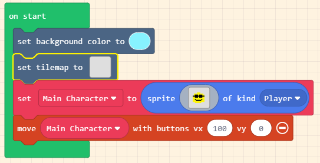
- Click the blank spot in the
set tilemap toblock to open the Tilemap Editor
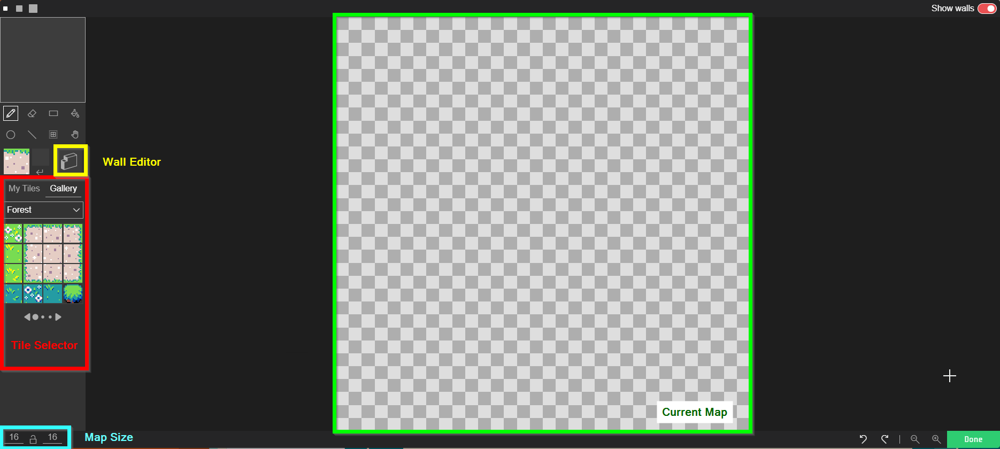
- In the bottom left, set the Map Size to
16x8- Zoom out if necessary using the magnifying glass icons in the bottom right
- In the Tile Selector section, select a tile for the ground
- In the Current Map section, draw ground covering the bottom part of the map
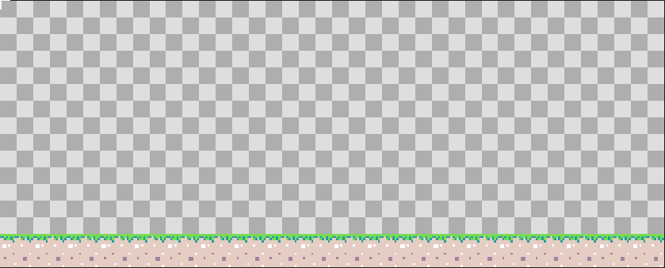
- Select the Wall Editor tool
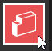
- Draw over the ground with the wall editor - this will make the ground stop the main character from falling
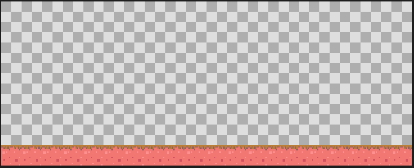
- Click the "Done" button, and see the map appear in the game preview!
Adding Gravity
Now that the main character has somewhere to land, add gravity to the game!
- In the "Sprites" category, click and drag a
set mySprite x to 0block under the existing blocks inon start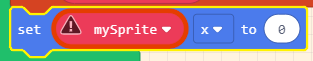
- Click the drop-down arrow next to
mySpriteand selectMain Character - Click the drop-down arrow next to
xand selectay (acceleration y) - Change the
0to400- This will make the main character accelerate downward (fall)
- Notice that in the updated game preview, the main character can move to the right off the screen - the camera does not follow the sprite
- In the "Scene" category, scroll down to find a
camera follow spriteblock, and click and drag it under the existing blocks inon start - Click the drop-down arrow next to
mySpriteand selectMain Character - Play the game in the game preview and verify that the main character falls, and the camera follows them!
Making the Main Character Jump
In almost every platformer, the main character has the ability to jump.
- In the "Controller" category, click and drag an
on A button pressedinto the Code section - Click the drop-down arrow next to
Aand selectup
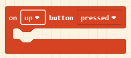
- In the "Sprites" category, click and drag a
set mySprite x to 0block into theon up button pressedblock - Click the drop-down arrow next to
mySpriteand selectMain Character - Click the drop-down arrow next to
xand selectvy (velocity y) - Change the
0to-200- This will make the main character start moving upward (jump)
- In the game preview, notice that the main character can jump multiple times, which should not be possible
Single Jump
The main character should only be able to jump when they are on the ground.
- In the "Logic" category, click and drag an
if true thenblock into theon up button pressedblock - In the "Scene" category, scroll down to "Collisions" and click and drag an
is mySprite hitting wall leftinto thetruein theifblock - Click the drop-down arrow next to
mySpriteand selectMain Character - Click the drop-down arrow next to
leftand selectbottom - Click and drag the
set Main Character vy to -200block into theifblock - Play the game preview and verify that the main character can only jump when they are on the ground!
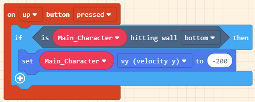
Side-Note: Conditionals
In computer science, conditionals let the program do different things depending on the current situation. In this example, the main character can only jump if they are on the ground. Conditionals are incredibly useful for creating dynamic programs!
Winning the Game
For this to be an actual game, there should be a way to win!
- Find the
set tilemap toblock, and click on the tilemap to open the Tilemap Editor
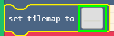
- In the Tile Selector section on the left, find a good tile for the winning tile
- The player will win the game if the main character overlaps with this tile
- Select the tile, and select the pencil tool
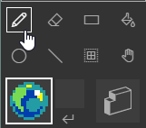
- Place the winning object tile somewhere on the tilemap
- Click the green "Done" button in the lower right to exit the Tilemap Editor
- Back in the code, in the "Scene" category, scroll down to Tiles and find the
on sprite of kind Player overlaps at locationblock - Click and drag the
overlapsblock to a blank spot in the Code section - Click the drop-down arrow next to
overlapsand select the winning object tile - In the "Game" category, click and drag a
game overblock into theoverlapsblock - Click the
LOSEswitch to flip it toWIN - Play the game in the game preview to verify that reaching the winning object will win the game!
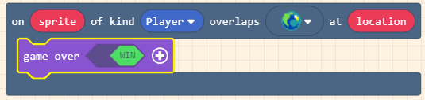
Losing the Game
The game will not be very interesting if there is no way to lose. Add an obstacle that will end the game for the player.
- Find the
set tilemap toblock, and click on the tilemap to open the Tilemap Editor - In the Tile Selector section on the left, click on "My Tiles"
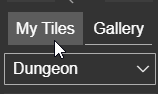
- Click the "+" to create a new tile for an obstacle
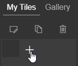
- In the Tile Editor, draw an obstacle that will end the game (e.g. spikes, fire, an enemy)
- Place the obstacle tile in several places on the tilemap
- Click the green "Done" button in the lower right to exit the Tilemap Editor
- Back in the code, in the "Scene" category, click and drag another
overlapsblock into the Code section - Click the drop-down arrow next to
overlapsand select the obstacle tile - In the "Game" category, click and drag a
game overblock into the newoverlapsblock - Click the
+on thegame overblock to reveal additional options - Click the drop-down arrow next to
confettiand select a new game-ending animation (likemelt) - Play the game in the game preview to verify that touching an obstacle will lose the game!
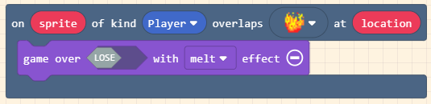
Code
At this point, the project should be done! It should look something like this: